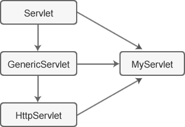

Servlet三种创建方式
在 Servlet 中，一个动态网页对应一个 Servlet 类，我们可以通过 web.xml 配置文件将 URL 路径和 Servlet 类对应起来。访问一个动态网页的过程，实际上是将对应的 Servlet 类加载、实例化并调用相关方法的过程；网页上显示的内容，就是通过 Servlet 类中的某些方法向浏览器输出的 HTML 语句。
所以，使用 Servlet 创建动态网页的第一步，就是创建 Servlet 类。
Servlet 规范的最顶层是一个名为 javax.servlet.Servlet 的接口，所有的 Servlet 类都要直接或者间接地实现该接口。直接实现 Servlet 接口不太方便，所以 Servlet 又内置了两个 Servlet 接口的实现类（抽象类），分别为 GenericServlet 和 HttpServlet，因此，创建 Servlet 类有如下三种方式：
由上图可知：
Servlet 接口中定义了 5 个方法，下面我们对他们做简单的介绍。
GenericServlet 类中还提供了以下方法，用来获取 Servlet 的配置信息。
在 HTTP/1.1 协议中共定义了 7 种请求方式，即 GET、POST、HEAD、PUT、DELETE、TRACE 和 OPTIONS。
HttpServlet 针对这 7 种请求方式分别定义了 7 种方法，即 doGet()、doPost()、doHead()、doPut()、doDelete()、doTrace() 和 doOptions()。
HttpServlet 重写了 service() 方法，该方法会先获取客户端的请求方式，然后根据请求方式调用对应 doXxx 方法。
Generic 是“通用”的意思，正如其名，GenericServlet 是一个通用的 Servlet 类，并没有针对某种场景进行特殊处理，尤其是 HTTP 协议，我们必须手动分析和封装 HTTP 协议的请求信息和响应信息。
正如其名，HttpServlet 就是专为 HTTP 协议而量身打造的 Servlet 类。
在互联网上，人们都是通过 HTTP 协议来访问动态网页的，其中使用最频繁的就是 GET 方式和 POST 方式，因此，我们通常基于 HttpServlet 来创建 Servlet 类，这样就省去了处理 HTTP 请求的过程。
所以，使用 Servlet 创建动态网页的第一步，就是创建 Servlet 类。
Servlet 规范的最顶层是一个名为 javax.servlet.Servlet 的接口，所有的 Servlet 类都要直接或者间接地实现该接口。直接实现 Servlet 接口不太方便，所以 Servlet 又内置了两个 Servlet 接口的实现类（抽象类），分别为 GenericServlet 和 HttpServlet，因此，创建 Servlet 类有如下三种方式：
- 实现 javax.servlet.Servlet 接口，重写其全部方法。
- 继承 javax.servlet.GenericServlet 抽象类，重写 service() 方法。
- 继承 javax.servlet.http.HttpServlet 抽象类，重写 doGet() 或 doPost() 方法。
Servlet、GenericServlet 、HttpServlet 的关系
下图展示了 Servlet、GenericServlet 以及 HttpServlet 三者之间的关系，其中 MyServlet 是我们自定义的 Servlet 类。

由上图可知：
- GenericServlet 是实现了 Servlet 接口的抽象类。
- HttpServlet 是 GenericServlet 的子类，具有 GenericServlet 的一切特性。
- Servlet 程序（MyServlet 类）是一个实现了 Servlet 接口的 Java 类。
Servlet 接口
javax.servlet.Servlet 是 Servlet API 的核心接口，所有的 Servlet 类都直接或间接地实现了这一接口。Servlet 接口中定义了 5 个方法，下面我们对他们做简单的介绍。
| 返回值 | 方法 | 备注 |
|---|---|---|
| void | init(ServletConfig config) |
Servlet 实例化之后，由 Servlet 容器调用，用来初始化 Servlet 对象。该方法只能被调用一次。 参数 config 用来向 Servlet 传递配置信息。 |
| void | service(ServletRequest req,ServletResponse res) | Servlet 容器调用该方法处理客户端请求。 |
| void | destroy() | 服务器关闭、重启或者 Servlet 对象被移除时，由 Servlet 容器调用，负责释放 Servlet 对象占用的资源。 |
| ServletConfig | getServletConfig() | 该方法用来获取 ServletConfig 对象，该对象中包含了 Servlet 的初始化参数。 |
| String | getServletInfo() | 该方法用于获取 Servlet 的信息，例如作者、版本、版权等。 |
示例 1
通过实现 Servlet 接口创建 Servlet，示例代码如下。
package net.biancheng.www;
import javax.servlet.*;
import java.io.IOException;
import java.io.PrintWriter;
public class MyServlet implements Servlet {
//Servlet 实例被创建后，调用 init() 方法进行初始化，该方法只能被调用一次
@Override
public void init(ServletConfig servletConfig) throws ServletException {
}
//返回 ServletConfig 对象，该对象包含了 Servlet 的初始化参数
@Override
public ServletConfig getServletConfig() {
return null;
}
//每次请求，都会调用一次 service() 方法
@Override
public void service(ServletRequest servletRequest, ServletResponse servletResponse) throws ServletException, IOException {
//设置字符集
servletResponse.setContentType("text/html;charset=UTF-8");
//使用PrintWriter.write()方法向前台页面输出内容
PrintWriter writer = servletResponse.getWriter();
writer.write("编程帮欢迎您的到来，网址: www.biancheng.net");
writer.close();
}
//返回关于 Servlet 的信息，例如作者、版本、版权等
@Override
public String getServletInfo() {
return null;
}
//Servelet 被销毁时调用
@Override
public void destroy() {
}
}
GenericServlet 抽象类
javax.servlet.GenericServlet 实现了 Servlet 接口，并提供了除 service() 方法以外的其他四个方法的简单实现。通过继承 GenericServlet 类创建 Servlet ，只需要重写 service() 方法即可，大大减少了创建 Servlet 的工作量。GenericServlet 类中还提供了以下方法，用来获取 Servlet 的配置信息。
| 返回值 | 方法 | 备注 |
|---|---|---|
| String | getInitParameter(String name) | 返回名字为 name 的初始化参数的值，初始化参数在 web.xml 中进行配置。如果参数不存在，则返回 null。 |
| Enumeration<String> | getInitParameterNames() | 返回 Servlet 所有初始化参数的名字的枚举集合，若 Servlet 没有初始化参数，返回一个空的枚举集合。 |
| ServletContext | getServletContext() | 返回 Servlet 上下文对象的引用。 |
| String | getServletName() | 返回此 Servlet 实例的名称。 |
示例 2
通过继承 GenericServlet 抽象类创建 Servlet，示例代码如下。
package net.biancheng.www;
import javax.servlet.*;
import java.io.IOException;
import java.io.PrintWriter;
public class MyServlet extends GenericServlet {
@Override
public void service(ServletRequest servletRequest, ServletResponse servletResponse) throws ServletException, IOException {
//设置字符集
servletResponse.setContentType("text/html;charset=UTF-8");
//使用PrintWriter.write()方法向前台页面输出内容
PrintWriter writer = servletResponse.getWriter();
writer.write("编程帮欢迎您的到来，网址: www.biancheng.net");
writer.close();
}
}
HttpServlet 抽象类
javax.servlet.http.HttpServlet 继承了 GenericServlet 抽象类，用于开发基于 HTTP 协议的 Servlet 程序。由于 Servlet 主要用来处理 HTTP 的请求和响应，所以通常情况下，编写的 Servlet 类都继承自 HttpServlet。在 HTTP/1.1 协议中共定义了 7 种请求方式，即 GET、POST、HEAD、PUT、DELETE、TRACE 和 OPTIONS。
HttpServlet 针对这 7 种请求方式分别定义了 7 种方法，即 doGet()、doPost()、doHead()、doPut()、doDelete()、doTrace() 和 doOptions()。
HttpServlet 重写了 service() 方法，该方法会先获取客户端的请求方式，然后根据请求方式调用对应 doXxx 方法。
示例 3
由于我们使用的请求方式主要是 GET 和 POST，所以通过继承 HttpServlet 类创建 Servlet 时，只需要重写 doGet 或者 doPost 方法，代码如下。
package net.biancheng.www;
import javax.servlet.*;
import javax.servlet.http.HttpServlet;
import javax.servlet.http.HttpServletRequest;
import javax.servlet.http.HttpServletResponse;
import java.io.IOException;
import java.io.PrintWriter;
public class MyServlet extends HttpServlet {
public void doGet(HttpServletRequest req, HttpServletResponse resp) throws ServletException, IOException {
//使用PrintWriter.write()方法向前台页面输出内容
resp.setContentType("text/html;charset=UTF-8");
PrintWriter writer = resp.getWriter();
writer.write("编程帮欢迎您的到来，网址: www.biancheng.net");
writer.close();
}
public void doPost(HttpServletRequest req, HttpServletResponse resp) throws ServletException, IOException {
//使用PrintWriter.write()方法gaifang向前台页面输出内容
PrintWriter writer = resp.getWriter();
writer.write("编程帮欢迎您的到来，网址: www.biancheng.net");
writer.close();
doGet(req, resp);
}
}
总结
上面演示了三种创建 Servlet 的方式，那么在实际开发中，我们究竟该选择哪一种呢？下面我们就来分析和对比一下。1) Servlet 接口
通过实现 Servlet 接口创建 Servlet 类，需要重写其全部的方法，比较繁琐，所以我们很少使用该方法创建 Servlet。2) GenericServlet 类
GenericServlet 抽象类实现了 Servlet 接口，并对 Servlet 接口中除 service() 方法外的其它四个方法进行了简单实现。通过继承 GenericServlet 创建 Servlet，只需要重写 service() 方法即可，大大减少了创建 Servlet 的工作量。Generic 是“通用”的意思，正如其名，GenericServlet 是一个通用的 Servlet 类，并没有针对某种场景进行特殊处理，尤其是 HTTP 协议，我们必须手动分析和封装 HTTP 协议的请求信息和响应信息。
3) HttpServlet 类
HttpServlet 是 GenericServlet 的子类，它在 GenericServlet 的基础上专门针对 HTPP 协议进行了处理。HttpServlet 为 HTTP 协议的每种请求方式都提供了对应的方法，名字为 doXxx()，例如：- 处理 GET 请求的方法为 doGet()；
- 处理 POST 请求的方法为 doPost()。
正如其名，HttpServlet 就是专为 HTTP 协议而量身打造的 Servlet 类。
在互联网上，人们都是通过 HTTP 协议来访问动态网页的，其中使用最频繁的就是 GET 方式和 POST 方式，因此，我们通常基于 HttpServlet 来创建 Servlet 类，这样就省去了处理 HTTP 请求的过程。
关注公众号「站长严长生」，在手机上阅读所有教程，随时随地都能学习。内含一款搜索神器，免费下载全网书籍和视频。

微信扫码关注公众号